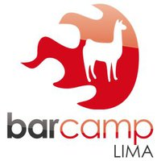

BarCamp Lima 5
Webmakers: Constructores de la Web
24 de marzo de 2012, desde las 9:30am
Universidad Tecnológica del Perú

¿Qué es un BarCamp?
Un BarCamp es un evento donde el típico formato de expositores y espectadores se rompe, donde no hay expositores o temas preestablecidos hasta el mismo día del evento.
En un BarCamp todos aportan, todos los que asisten deben ofrecer una charla o una demostración de 15 minutos, y sino ayudar a otros con las suyas. Cada participante en el BarCamp aporta algo de su experiencia. Todos ganamos y la pasamos muy bien.
Barcamp Lima 5
La propuesta de BarCamp Lima 5 nace con el objeto de ofrecer un espacio de diálogo y aprendizaje en la ciudad de Lima sobre tecnologías de desarrollo web, específicamente en aplicaciones prácticas de HTML, CSS, JavaScript, Drupal, WordPress, Python, PHP, Ruby, etcétera. También se admiten temas relacionados a la Web diferentes a programación.
Un segundo objetivo es promover el encuentro de profesionales de intereses diversos y comunes que permitan enriquecer a las comunidades existentes y la formación de nuevas agrupaciones.
Se espera que los participantes estén dispuestos a presentar sus conocimientos o implementaciones usando tecnologías web, NO para utilizar sus tiempos de exposición en la promoción de productos o servicios.
Ediciones anteriores
- BarCamp Lima 1: 8 de noviembre de 2008 (HP)
- BarCamp Lima 2: 28 de marzo de 2009 (Compu Palace)
- BarCamp Lima 3: 11 de diciembre de 2010 (HP)
- BarCamp Lima 4: 6 de agosto de 2011 (Hotel Britania)
Fecha y lugar
- Fecha: 24 de marzo de 2012, desde las 9:30am
- Lugar: Auditorio "Elisa Toullier de Valcárcel" de la Universidad Tecnológica del Perú
- Dirección: Avenida Petit Thouars con 28 de Julio, tercer piso, Lima.
- Mapa: En Google Maps
Cómo participar
El ingreso es LIBRE. Sin embargo, los asistentes deben participar activamente en el evento, sea exponiendo un tema, haciendo preguntas a los expositores o reportando las incidencias del evento vía Internet. Si es la primera vez que conoces la dinámica del evento y sólo quieres escuchar a los expositores te recomendamos que sigas la transmisión de video del evento.
Las reglas del BarCamp
Paso 1
1. Habla del BarCamp tanto como puedas para publicitarlo. Escribe en tu blog, lista de correos, foros, estado de Messenger/GTalk, Facebook, Twitter, Google+, etc. Usa el tag “barcamplima” y guíate del anuncio oficial de http://lima.barcamp.pe/
Paso 2
2. Si es tu primera vez en un BarCamp debes preparar un tema o apoyar alguna discusión o actividad. No necesitas ser un experto, recuerda que sólo dispondrás de 15 minutos, pero si debes escoger un tema relacionado con la Web (programación, servidores, usabilidad, publicidad, el que prefieras).
El día del BarCamp Lima
- Al llegar al BarCamp debes escribir tu nombre y tema en la pizarra en los horarios disponibles del auditorio.
- Todo empieza con una reunión inicial de presentaciones. Sólo se permitirán introducciones personales de 4 palabras.
- Se harán tantas charlas como espacios y tiempos se disponga. Por eso, si quieres tener seguridad de exponer llega temprano.
- No hay presentaciones pre-establecidas, los temas se dan a conocer durante el BarCamp.
- Cada charla tendrá un límite de 15 minutos, incluyendo tiempos de instalación y preguntas.
Tips para expositores
- Lleva lista tu presentación en un formato legible en cualquier equipo, como PDF.
- Al terminar tu charla informa si publicarás los materiales en Internet.
- En el caso de presentaciones te sugerimos que luego crees una cuenta en www.slideshare.net y subas la presentación con las etiquetas barcamplima,barcamplima5.

Organizan
- Mozilla Perú – La comunidad de usuarios de Firefox y otros productos de Mozilla, y de aquellos que creen en un Internet abierto para todos.
Auspician
BarCamp Lima es posible gracias al apoyo en:
- Auditorio: Universidad Tecnológica del Perú
- Dominio: Antonio Ognio
- Hosting: Diego Lerma
BarCamp Lima es desde 2008 el espacio de diálogo y aprendizaje en la ciudad de Lima que reúne a especialistas en tecnologías web.